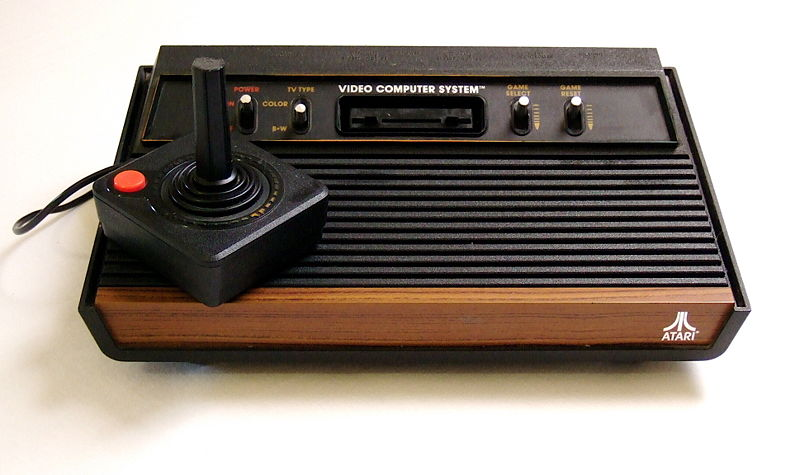

Atari 2600 Video Computer System (VCS), 1977
Uso de cartuchos em ROM ou fita K7
CPU:
MOS 6507
Frequência: 1,19 MHz
RAM: 128 bytes
Resolução: 160 x 192 pixels
Cores: 128
Unidades vendidas: 30 milhões
Jogo mais vendido: PacMan (7 milhões)